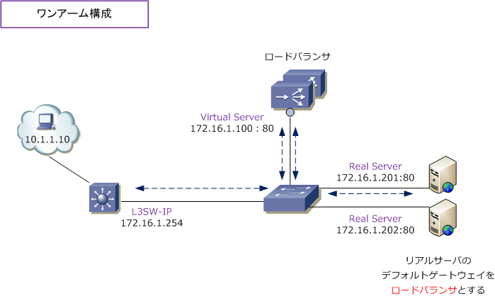
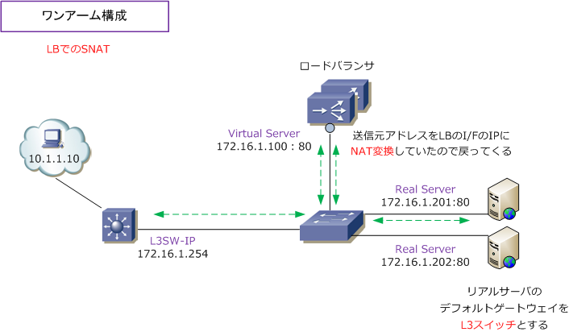

Load Balancer - One-Arm
ワンアーム構成とは
ロードバランサの配置には、クライアント ⇔ サーバ間の通信経路上に配置する「インライン構成」と、 クライアント ⇔ サーバ間の通信経路上のスイッチに横付けに配置する「ワンアーム構成」があります。 今回は以下のワンアーム構成でその特性と注意点について考えていきます。通信要件によって、下図の ように、リアルサーバ、バーチャルサーバ、デフォルトゲートウェイを同セグにするケースがあります。

上図は、10.1.1.10 のクライアントPCが「172.16.1.100:80」に通信する時の行きのフローとなります。 VS「172.16.1.100：80」に着信したパケットは、LBで設定されたロードバランス方式に従ってパケット 転送されます。そして、リアルサーバのデフォルトゲートウェイがLBのIPアドレスを指定していることで パケットの行きと戻りが同じパスとなり正常に通信ができます。しかし、通信要件により、リアルサーバ のデフォルトゲートウェイにL3スイッチのIPアドレスを指定する必要がある場合には、問題が発生します。
ロードバランサではTCPセッションのステートを管理しています。以下のように「行き」と「戻り」とで 経路が異なる場合、ロードバランサでセッションが確立できず基本的に正常に通信することができません。 ※ DSR（Direct Server Return）を実装する場合、非対称ルートでも正常にも通信することができます。
行きのパケット ： クライアント ⇒ ロードバランサ ⇒ リアルサーバ 戻りのパケット ： リアルサーバ ⇒ クライアント
ワンアーム構成でこの問題を回避するためには、ロードバランサからリアルサーバにパケットを送信する際、 送信元アドレスをLBの I/F のアドレスにNAT変換することで回避できて、行きと戻りが同じ経路となります。

リアルサーバのデフォルトゲートウェイをLBのI/FのIPアドレスに向けている場合、LBでのSNATは不要です。